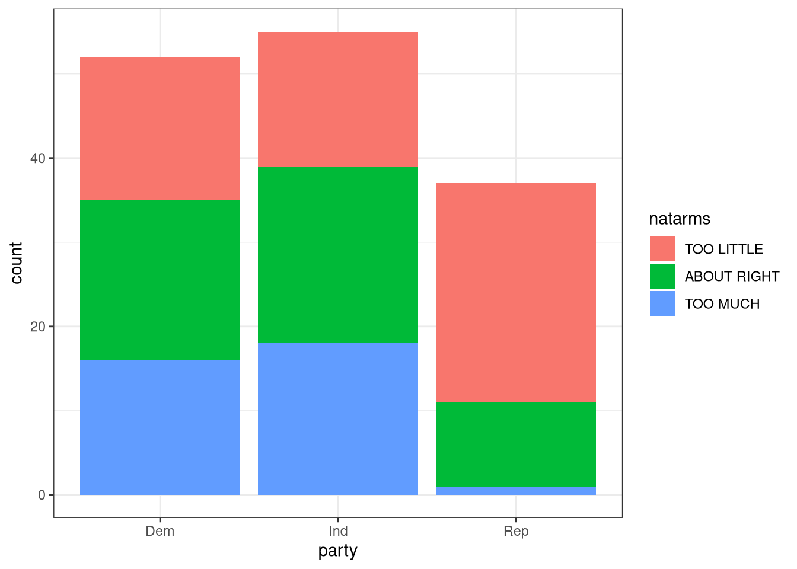
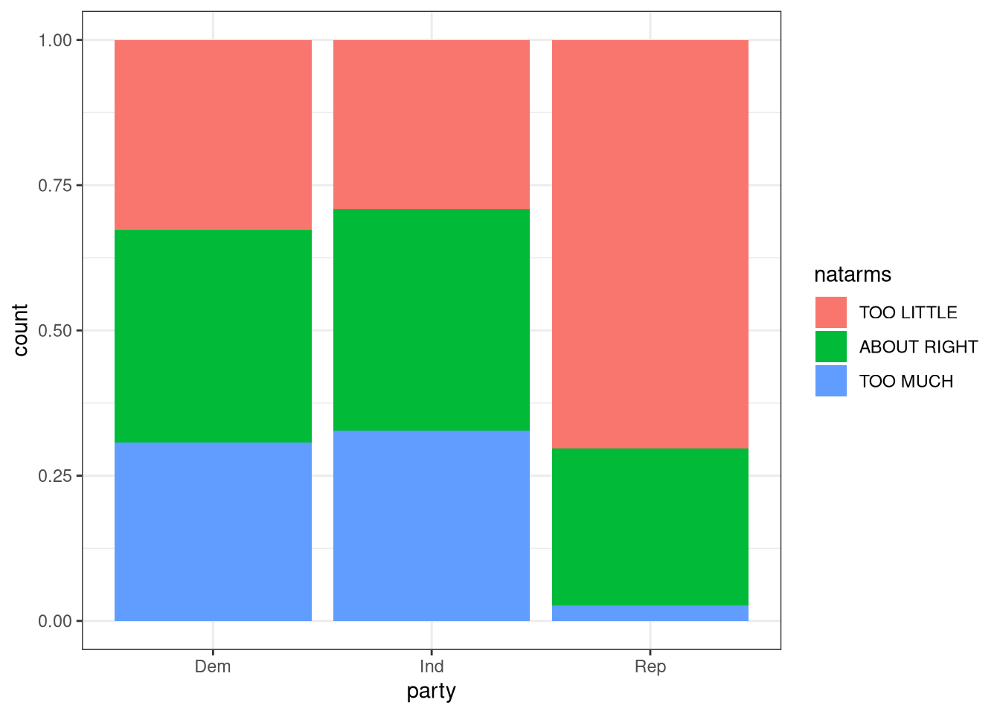
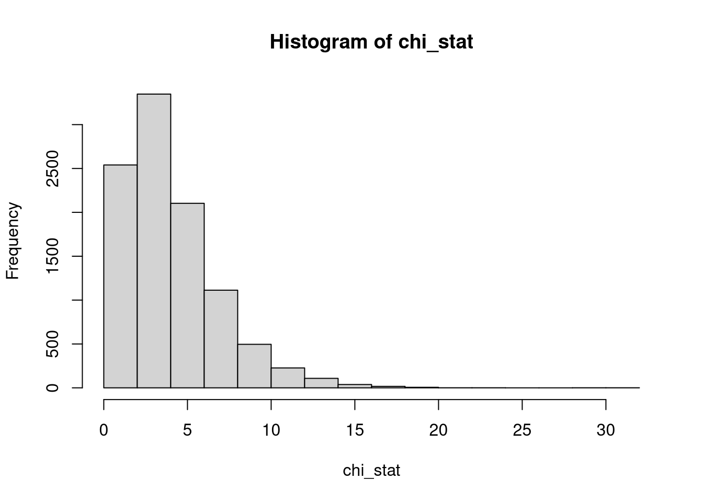

library(tidyverse)library(infer)load("../Data/gss.RData")gss2016 <- gss |>filter(year ==2016) |># I am filtering to get a similar set used in DataCampfilter(!is.na(consci)) |>filter(!is.na(cappun)) |>filter(!is.na(sex)) |>filter(!is.na(partyid)) |>filter(!is.na(postlife)) |>filter(!is.na(natspac)) |>filter(!is.na(natarms)) |>filter(!is.na(happy)) |>filter(!is.na(region))# Recoding levels of consci---similar to data camp???gss2016$consci <-ifelse(gss2016$consci =="A GREAT DEAL", "High", "Low")set.seed(321) # Make same size as data camp...randomlyind <-sample(1:nrow(gss2016), 150, replace =FALSE)gss2016 <- gss2016[ind, ]# Create new variable partygss2016$party <-ifelse(gss2016$partyid %in%c("STRONG DEMOCRAT","NOT STR DEMOCRAT"),"Dem", ifelse(gss2016$partyid %in%c("IND,NEAR DEM", "IND,NEAR REP","INDEPENDENT"), "Ind",ifelse(gss2016$partyid %in%c("STRONG REPUBLICAN", "NOT STR REPUBLICAN"), "Rep", "Oth")))#### Subset datagss_party <- gss2016 |># Filter out the "Oth"filter(party !="Oth") tab_politics <- gss_party |># Select columns of interestselect(natarms, party) |># Create tabletable()# View the resulttab_politics
party
natarms Dem Ind Rep
TOO LITTLE 17 16 26
ABOUT RIGHT 19 21 10
TOO MUCH 16 18 1
Test of Independence Hypotheses
We would like to test the null hypothesis that opinions on how much money is spend on defense (natarms) is independent of party (party) affiliation. The alternative hypothesis is that there is an association between opinions on how much money is spend on defense and party affiliation.
Graphing the Counts
gss_party |>ggplot(aes(x = party, fill = natarms)) +geom_bar() +theme_bw()

If we want to look at the proportions we would code the graph as follows:
gss_party |>ggplot(aes(x = party, fill = natarms)) +geom_bar(position ="fill") +theme_bw()

Computing the expected counts
tab_politics -> obsobs
party
natarms Dem Ind Rep
TOO LITTLE 17 16 26
ABOUT RIGHT 19 21 10
TOO MUCH 16 18 1
chisq.test(obs)$expected -> expexp
party
natarms Dem Ind Rep
TOO LITTLE 21.30556 22.53472 15.159722
ABOUT RIGHT 18.05556 19.09722 12.847222
TOO MUCH 12.63889 13.36806 8.993056
Computing the test statistic
chi_sq_stat <-sum((obs - exp)^2/exp)chi_sq_stat
[1] 20.98965
Computing the p-value
pchisq(chi_sq_stat, 4, lower =FALSE)
[1] 0.0003181692
# Making assumptions and using chisq.test()chisq.test(obs, correct =FALSE)
Dem Ind Rep
TOO LITTLE 17 16 26
ABOUT RIGHT 19 21 10
TOO MUCH 16 18 1
(obs_stat <-chisq.test(T1, correct =FALSE)$stat)
X-squared
20.98965
P <-10^4chi_stat <-numeric(P)for(i in1:P){ chi_stat[i] <-chisq.test(table(gss_party$natarms, sample(gss_party$party)), correct =FALSE)$stat}hist(chi_stat)

(p_value <-mean(chi_stat >= obs_stat))
[1] 4e-04
Conclusion
Given the p-value (\(4\times 10^{-4}\)) is significantly less than \(\alpha = 0.05\) we reject the null hypothesis and conclude there is an association between a persons opinion on the how much the country is spending on national defense and their party affiliation.